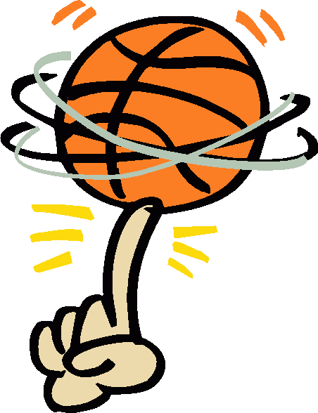
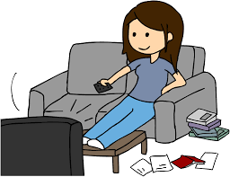
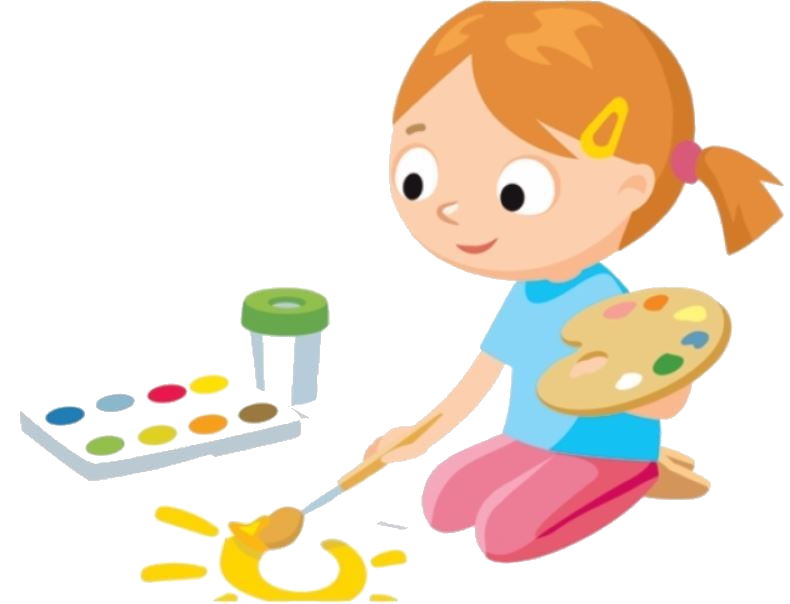

Interests and Hobbies
- Basketball
- I have been playing basketball for the past 6 years and it has been an integral part of my life. It started out with me trying out the sport for fun and then actually liking it. Basketball can be a great way to take my mind of the stress and not to mention participating in tournaments and meeting other teams. It can be a whole new experience every single time.

- Gaining new technical skills
- Yearning to learn new things have always been one of my inbuilt characteristics that can be seen from when I was a child. Once i started exploring the ocean of software develpoment technologies, it turned into a great interest to me.
- Watching movies
- Watching movies after exams or on a sunday morning is one of the greatest get-aways. Binge watching movies and tv shows is a hobby that I developed in college which has proven as a distraction in good as well as bad ways.

- Listening to music
- When i feel low or really pumped up, music is always the answer. It can help in lifting my mood or calm me down depending of the genre.
- Sketching
- Sketching/ painting was one of my favourite hobbies when i was younger. It helped develop my creativty from a very young age. Although i this hobby of mine has turned into something I rarely do, it still remains an area of interest for me.

- Photography
- Photography was a rather brief fling in school. But, I really enjoyed it while it lasted and would love to get back into it.

- Exploring street food
- Saved the best for the last! Delicious food is something that makes everyone go crazy over it. When it comes to street food, it is needless to say how mouth-watering it can be.